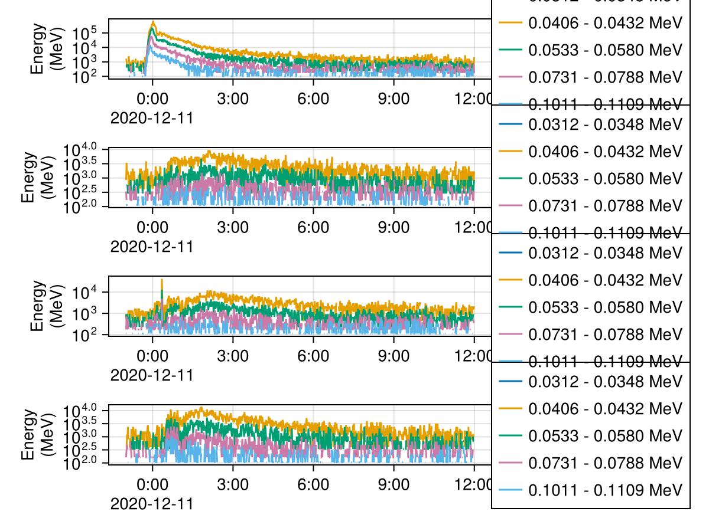
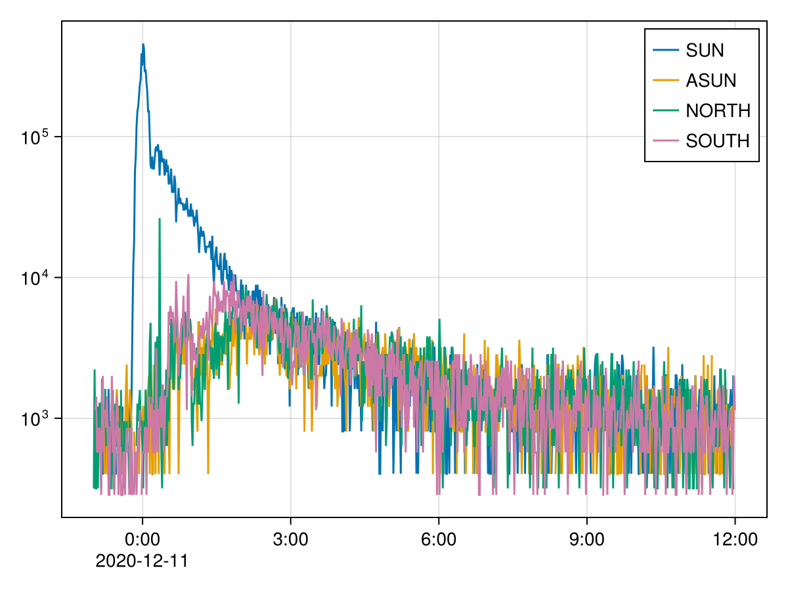

Solar Orbiter (SolO)
Energetic Particle Detector (EPD) data through CDAWeb.jl.
using CDAWeb
get_datasets("SOLO", "EPD", "EPT")23 CDAWeb datasets:
SOLO_L2_EPD-EPT-ASUN-BURST-ELE-CLOSE 2020-06-15..2020-06-15 Solar Orbiter, Level 2 Data, Energetic Particle Detector, Electron Proton Telescope, Anti-Sun direction, Burst, Electrons, Close mode
SOLO_L2_EPD-EPT-ASUN-BURST-ION 2020-06-15..2020-06-15 Solar Orbiter, Level 2 Data, Energetic Particle Detector, Electron Proton Telescope, Anti-Sun direction, Burst, Ions
SOLO_L2_EPD-EPT-ASUN-HCAD 2020-05-13..2021-03-23 Solar Orbiter, Level 2 Data, Energetic Particle Detector, Electron Proton Telescope, Anti-Sun direction, High Cadence
SOLO_L2_EPD-EPT-ASUN-RATES 2020-05-13..2026-05-31 Solar Orbiter, Level 2 Data, Energetic Particle Detector, Electron Proton Telescope, Anti-Sun Direction, Rates
SOLO_L2_EPD-EPT-NORTH-BURST-ELE-CLOSE 2020-06-15..2020-06-15 Solar Orbiter, Level 2 Data, Energetic Particle Detector, Electron Proton Telescope, North direction, Burst, Electrons, Close mode
SOLO_L2_EPD-EPT-NORTH-BURST-ION 2020-06-15..2020-06-15 Solar Orbiter, Level 2 Data, Energetic Particle Detector, Electron Proton Telescope, North direction, Burst, Ions
SOLO_L2_EPD-EPT-NORTH-HCAD 2020-05-13..2021-03-23 Solar Orbiter, Level 2 Data, Energetic Particle Detector, Electron Proton Telescope, North Direction, High Cadence
SOLO_L2_EPD-EPT-NORTH-RATES 2020-05-13..2026-05-31 Solar Orbiter, Level 2 Data, Energetic Particle Detector, Electron Proton Telescope, North Direction, Rates
SOLO_L2_EPD-EPT-SOUTH-BURST-ELE-CLOSE 2020-06-15..2020-06-15 Solar Orbiter, Level 2 Data, Energetic Particle Detector, Electron Proton Telescope, South direction, Burst, Electrons, Close mode
SOLO_L2_EPD-EPT-SOUTH-BURST-ION 2020-06-15..2020-06-15 Solar Orbiter, Level 2 Data, Energetic Particle Detector, Electron Proton Telescope, South direction, Burst, Ions
SOLO_L2_EPD-EPT-SOUTH-HCAD 2020-05-13..2021-03-23 Solar Orbiter, Level 2 Data, Energetic Particle Detector, Electron Proton Telescope, South direction, High Cadence
SOLO_L2_EPD-EPT-SOUTH-RATES 2020-05-13..2026-05-31 Solar Orbiter, Level 2 Data, Energetic Particle Detector, Electron Proton Telescope, South Direction, Rates
SOLO_L2_EPD-EPT-SUN-BURST-ELE-CLOSE 2020-06-15..2020-06-15 Solar Orbiter, Level 2 Data, Energetic Particle Detector, Electron Proton Telescope, Sun direction, Burst, Electrons, Close mode
SOLO_L2_EPD-EPT-SUN-BURST-ION 2020-06-15..2020-06-15 Solar Orbiter, Level 2 Data, Energetic Particle Detector, Electron Proton Telescope, Sun direction, Burst, Ions
SOLO_L2_EPD-EPT-SUN-HCAD 2020-05-13..2021-03-23 Solar Orbiter, Level 2 Data, Energetic Particle Detector, Electron Proton Telescope, Sun direction, High Cadence
SOLO_L2_EPD-EPT-SUN-RATES 2020-05-13..2026-05-31 Solar Orbiter, Level 2 Data, Energetic Particle Detector, Electron Proton Telescope, Sun Direction, Rates
SOLO_L3_EPD-EPT-1DAY 2020-01-01..2026-12-31 Solar Orbiter, Level 3 Data, Energetic Particle Detector, Electron Proton Telescope, 1 day resolution data
SOLO_L3_EPD-EPT-1HOUR 2020-06-01..2026-01-31 Solar Orbiter, Level 3 Data, Energetic Particle Detector, Electron Proton Telescope, 1 hour
SOLO_L3_EPD-EPT-1MIN 2020-05-13..2026-01-31 Solar Orbiter, Level 3 Data, Energetic Particle Detector, Electron Proton Telescope, 1 minute
SOLO_LL02_EPD-EPT-ASUN-RATES 2020-06-03..2026-09-14 Solar Orbiter Level 2 Low Latency Data from Energetic Particle Detector (EPD), Electron Proton Telescope (EPT), Anti-Sunward Direction Particle Rates
SOLO_LL02_EPD-EPT-NORTH-RATES 2020-06-03..2026-09-14 Solar Orbiter Level 2 Low Latency Data from Energetic Particle Detector (EPD) Electron Proton Telescope (EPT), North Direction Particle Rates
SOLO_LL02_EPD-EPT-SOUTH-RATES 2020-06-03..2026-09-14 Solar Orbiter Level 2 Low Latency Data from Energetic Particle Detector (EPD) Electron Proton Telescope (EPT), South Direction Particle Rates
SOLO_LL02_EPD-EPT-SUN-RATES 2020-06-03..2026-09-14 Solar Orbiter Level 2 Low Latency Data from Energetic Particle Detector (EPD) Electron Proton Telescope (EPT) Sunward Direction Particle RatesEPT electron fluxes in its four viewing directions:
tmin, tmax = "2020-12-10T23", "2020-12-11T12"
views = ("SUN", "ASUN", "NORTH", "SOUTH")
fluxes = [CDAWeb.Dataset("SOLO_L2_EPD-EPT-$(v)-RATES")["Electron_Flux"](tmin, tmax) for v in views]
first(fluxes)Electron_Flux (34 × 780) dims=Electron_Bins_Low_Energy × EPOCH_1 [Electron flux in foil channel; particles / (s cm^2 sr MeV)]using SpacePhysicsMakie, CairoMakie
using SpaceDataModel: DataVariable
# indexing a file variable gives a plain array; a `DataVariable` keeps times and coordinates
f = Figure()
for (i, x) in enumerate(fluxes)
linesplot(f[i, 1], replace(DataVariable(x)[1:4:20, :], 0 => NaN)) # zeros cannot show on log axes
end
f
Channel 6 from every direction:
f = Figure()
ax = Axis(f[1, 1]; yscale = log10)
for (v, x) in zip(views, fluxes)
linesplot!(ax, replace(DataVariable(x)[6, :], 0 => NaN); label = v)
end
axislegend(ax)
f